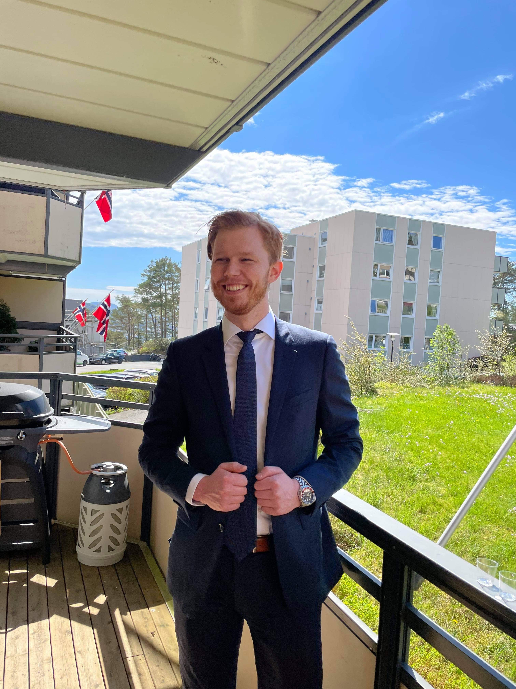

My skills:
VScode, HTML, CSS, Javascript, Bootstrap, Tailwind, Vite, Wordpress, SCSS, Figma, Webpack
Hi, my name is Sander Hammersland
Front end developer student
I am a student on my way to becoming a front end developer, I study at Noroff school of technology and digital media. So far i have learned the skills of HTML, CSS and Javascript, but there is plenty more to come. As a person i am self driven and hardworking, i have the ability to adapt easy to new environments and are very friendly so there is no problem adapting in to new teams.